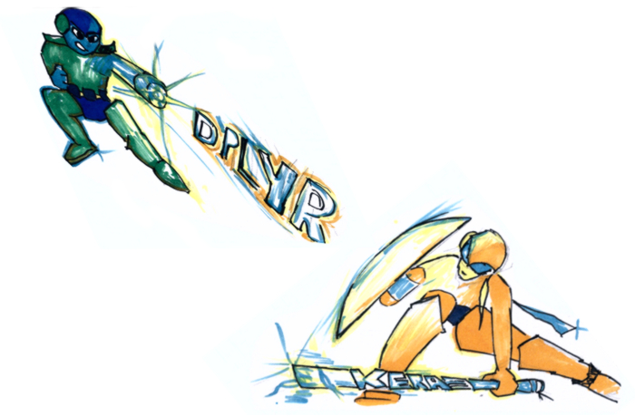

# This is just data from the sake of
# reproducible example
set.seed(123)
d1 <- rnorm(1000)
d2 <- rnorm(1000)
# Here's where my starts
# let's create some custom descriptive
# stats summary for the data generated above
d1_mean <- mean(d1)
d1_sd <- sd(d1)
d1_q <- quantile(d1)
desc_stats_d1 <- list(d1_mean = d1_mean,
d1_sd = d1_sd,
d1_q = d1_q)
d2_mean <- mean(d2)
d2_sd <- sd(d2)
d2_q <- quantile(d2)
desc_stats_d2 <- list(d2_mean = d2_mean,
d2_sd = d2_sd,
d2_q = d2_q)3 Programming 101
Obviously, the craft of programming is essential to handling data with a programming language. Though programming languages can differ quite a bit from each other, there is common ground and an approach to programming that is crucial to understand and important to learn by – particularly for programmers without a formal computer science background. This chapter wants to point researchers, analysts and data scientists to the low hanging, high-impact fruits of software engineering.
Programming is a form of communication. Communication with others, but also with your future self. It actually may be the best way to define complex contexts in reproducible fashion. Therefore, source code needs to be written in inclusive fashion. Programming needs to be seen as a chance to make complexity accessible to those who are experts in a particular domain. The fact that programs actually run makes them more accessible to many than formal mathematical definitions.
The programming examples in this book mostly stick to the [R] language, which is easy to install and run on one’s own local computer. All the concepts shown can easily transfer to other languages. Though potentially a bit more tricky to install and run across operating systems, Python would have been an equally good choice, but as there had to be a decision for one language for this book…
3.1 The Choice that Doesn’t Matter
The very first (and intimidating) choice a novice hacker faces is which is the programming language to learn. Unfortunately, the medium popularly summed up as the internet offers a lot of really, fantastic advice on the matter. The problem is, however, that this advice does not necessarily agree which language is the best for research. In the realm of data science – get accustomed to that label if you are a scientist who works with data – the debate basically comes down to two languages: The R Language for Statistical Computing and Python.
At least to me, there is only one valid advice: It simply does NOT matter. If you stick around in data science long enough, you will eventually get in touch with both languages and, in turn, learn both. There is a huge overlap of what you can do with either of those languages. R came out of the rather specific domain of statistics 25+ years ago and made its way to a more general programming language thanks to 15K+ extension packages (and counting). Built by a mathematician, Python continues to be as general purpose as it’s ever been. But it got more scientific, thanks to extension packages of its own such as pandas, SciPy or NumPy. As a result, there is a huge overlap of what both languages can do and both will extend your horizon in unprecedented fashion if you did not use a full-fledged programming language for your analysis before.

But why is there such a heartfelt debate online if it doesn’t matter? Let’s pick up a random argument from this debate: R is easier to set up and Python is better for machine learning. If you worked with Java or another environment that’s rather tricky to get going, you are hardened and might not cherish easy onboarding. If you got frustrated before you really started, you might feel otherwise. You may just have been unlucky making guesses about a not so well documented paragraph, trying to reproduce a nifty machine learning blog post. Just because you installed the wrong version of Python or didn’t manage to make sense of virtualenv right from the beginning.
The point is, rest assured, if you just start doing analytics using a programming language both languages are guaranteed to carry you a long way. There is no way to tell for sure which one will be the more dominant language in 10 years from now, or whether both still be around holding their ground the way they do now. But once you reached a decent software carpentry level in either language, it will help you a lot learning the other. If your peers work with R, start with R, if your close community works with Python, start with Python. If you are in for the longer run, either language will help you understand the concepts and ideas of programming with data. Trust me, there will be a natural opportunity to get to know the other.
If you associate programming more often than not with hours of fiddling, tweaking and fighting to galvanize approaches found online, this chapter is for you. Don’t expect lots of syntax. If you came for examples of useful little programs from data visualization to parallel computing, check out the case studies.
The following sections share a blueprint to go from explorative script to production-ready package. Organize your code and accompany the evolution of your project: start out with experiments, define your interface, narrow down to a proof of concept and scale up. Hopefully, the tips, tricks and the guidance in this chapter will help you to experience the rewarding feeling of a software project coming together like a plan originated by Hannibal Smith.
3.2 Plan Your Program
How much planning ahead is optimal for your project ultimately depends on your experience, number of collaborators and size of your project. But still, a rough standard checklist helps any project.
3.2.1 Think library!

The approach that I find practical for applied, empirical research projects involving code is: think library. Think package. Think reusable code. Don’t think you can’t do it. Let me demystify packages for you: Packages are nothing else than source code organized in folders following some convention. Thanks to modern IDEs, it has never been easier to stay inline with conventions. Editors like R Studio ship with built-in support to create package skeletons with a few clicks. Thousands of open source extension packages allow you to learn from their structure. Tutorials like Packing Python Projects or Hadley Wickham’s free online book R Packages explain how to create packages good enough to make the official PyPi or CRAN package repository.
In other words, it is unlikely that someone with moderate experience comes with the best folder structure ever invented. Sure, every project is different and not every aspect (folder) is needed in every project. Nevertheless, there are well established blueprints, guides and conventions that suit almost any project. Unlike Office types of projects which center around one single file, understand a research project will live in a folder with many subfolders and files. Not in one single file.
Trust me on this one: The package approach will pay off early. Long before you ever thought about publishing your package. Write your own function definition, rather than just calling functions line by line. Write code as if you need to make sure it runs on another computer. Write code as if you need to maintain it.
Go from scripts like this
To function definitions and calls like that
# Imagine you had thousand of datasets.
# Imagine you wanted to add some other stats
# Imagine all the error prone c&p with
# the above solution.
# Think of how much easier this is to document.
# This is automation. Not cooking.
create_basic_desc <- function(distr){
out <- list(
mean = mean(distr),
sd = sd(distr),
quantiles = quantile(distr)
)
out
}
create_basic_desc(d1)$mean
[1] 0.01612787
$sd
[1] 0.991695
$quantiles
0% 25% 50% 75% 100%
-2.809774679 -0.628324243 0.009209639 0.664601867 3.241039935 create_basic_desc(d2)$mean
[1] 0.04246525
$sd
[1] 1.009674
$quantiles
0% 25% 50% 75% 100%
-3.04786089 -0.65322296 0.05485238 0.75345037 3.39037082 Start to document functions and their parameters using [Roxygen (Hadley Wickham et al. 2022) syntax, and you’re already very close to creating your first package. Pro-tipp: Hit Cmd+Alt+Shift+R1 while inside a function definition with your cursor. When working with R Studio, it will create a nifty roxygen skeleton with all your function’s parameters.
#' Create Basic Descriptive Statistics
#'
#' Creates means, standard deviations and default quantiles from an numeric input vector.
#'
#' @param distr numeric vector drawn from an arbitraty distribution.
#' @export
create_basic_desc <- function(distr){
out <- list(
mean = mean(distr),
sd = sd(distr),
quantiles = quantile(distr)
)
out
}Writing reusable code will improve your ability to remember syntax and apply concepts to other problems. The more you do it, the easier and more natural it becomes. Just like a toddler figuring out how to speak in a natural language. At first, progress seems small, but once kids understand the bits and pieces of a language they start building at a remarkable speed, learn and never forget again.
3.2.2 Documentation
First things first. Write the first bit of documentation before your first line of code. Documentation written with hindsight will always be written with an all-knowing, smartest-person-in-the-room mindset and the motivation of someone who already gave her best programming. Understand, I am not talking about the fine-tuning here, but about a written outline. Describe how parts of the code are going to do stuff. Also, examples can’t hurt to illustrate what you meant. Research projects often take breaks, and getting back to work after months should be as easy as possible.
Pseudo Code is a good way of writing up such an outline documentation. Take a simple API wrapper, for example. Assume there is an API that returns numeric IDs of hit entries when queried for keywords. These IDs can be passed on to yet another endpoint, to obtain a profile. A rough game plan for an API Wrapper could like this:
# function: keyword_search(keyword, url = "https://some.default.url.com")
# returns numeric ids according to some api documentation
# function: query_profile(vec_in_ids)
# a json object that should be immediately turned into list by the function,
# returns list of propertiesDocumentation should use your ecosystem’s favorite documentation framework. Yet, your comments within the code are the raw, initial form of documentation. Comments help to understand key parts of a program as well as caveats. Comments help tremendously during development time, when debugging or coming back to a project. Let alone when joining a project started by others.
While pseudocode where comments mimmick code itself is the exception to that rule, good comments should always follow the not-what-but-why principle. Usually, most high-level programming languages are fairly easy to read and remind of rudimentary English. Therefore, a what comment like this is considered rather useless:
# compute the cumulative sum of a vector
cumsum(c(T,F,F,F,F,T,F,F,T,F,F,F,T))Whereas this why comment may actually be helpful:
# use the fact that TRUE is actually stored as 1
# to create a sequence until the next true
# this is useful for splitting the data later on.
cumsum(c(T,F,F,F,F,T,F,F,T,F,F,F,T))Comment on why you do things, especially with which plan for future use in mind. Doing so will certainly foster exchange with others who enter or re-visit the code at a later stage (including yourself).
3.2.3 Design Your Interface
In other languages, it is fairly common to define the data type of both: the input and the output2. Though doing so is not necessary in R, it is good practice to define the types of all parameters and results in your comments / documentation.
Once you know a bit more about your direction of travel, it’s time to think about how to modularize your program. How do different parts of the program play together. users interact with your program: Will your code just act as a storage pit of tools, a loose collection of commands for ad hoc use? Are others using the program, too? Will there be machine-to-machine interaction? Do you need a graphical user interface (GUI) like shiny?
These questions will determine whether you use a strictly functional approach, a rudimentary form of object orientation like S3 (Hadley Wickham 2019), a stricter implementation like [R6 (Chang 2021) or something completely exotic. There are plenty of great resources out there, so I will not elaborate on this for the moment. The main message of this section is: Think about the main use case. Is it interactive? Is it a program that runs in batch, typically? Do your users code? Would they prefer a GUI?
3.2.4 Dependencies
One important word of advice for novice package developers is to think about your dependencies. Do not take dependencies lightly. Of course, it is intriguing to stand on the shoulders of giants. Isn’t R great because of its 15K+ extension packages? Isn’t exactly this was made R such as popular language?
Yes, extension packages are cool. Yes, the ease with CRAN packages are distributed is cool. But, just because packages are easy to install and free of license costs it does not mean leaning on plenty of packages comes at no costs: One needs to stay informed about updates, issues, breaking changes or undesired interdependencies between packages.
The problem is mitigated a bit when a) a package is required in an interactive script and b) one is working with a very popular package. Well managed packages with a lot of reverse dependencies tend to deprecate old functionality more smoothly, as authors are aware of the issues breaking changes cause to a package’s ecosystem.
In R, the tidyverse bundle of packages seems ubiquitous and easy to use. But it leads to quite a few dependencies. The data.table ecosystem might be less popular but provides its functionality with a single R package dependency (the {methods} package).
Often it does not take much to get rid of dependency:
library(stringr)
cow <- "A cow sounds off: mooooo"
str_extract(cow,"moo+")[1] "mooooo"Sure, the above code is more intuitive, but shrewd use of good ol’ gsub and back referencing allows you to do the very same thing in base R.
gsub("(.+)(mooo+)","\\2",cow)[1] "mooooo"Again, {stringr} is certainly a well-crafted package, and it is definitely not the worst of all packages. But when you just loaded a package because it adds convenience to one single line or worse just because you found your solution online, think again before adding more dependencies to a production environment.
3.2.5 Folder Structure
In R, packages may have the following folders. Note that this does not mean a package has to contain all of these folders. FWIW, an R package needs to have NAMESPACE and DESCRIPTION files, but that is not the point here. Also, there are more comprehensive, better books on the matter than this little section. The point of this section though is to discuss the role of folders and how they help you structure your work, even if you don’t want to create an R package in the first place.
This chapter describes the role of different folders in a package and what these folders are good for. More likely than not, this will cover a lot of the aspects of your project, too.
- R
- data
- docs
- vignettes
- src
- inst
- man
The below description explains the role of all of these folders.
R
A folder to store function definitions as opposed to function calls. Typically every function goes into a separate file. Sometimes it makes sense to group multiple functions into a single file when functions are closely related. Another reason for putting more than one function into a single file is when you have a collection of relatively simple, short helper functions. The R folder MUST NOT contain calls3.
my_func_def <- function(param1, param2){
# here goes the function body, i.e., what the function does
a <- (param1 + param2) * param3
# Note that in R, return statements are not necessary and even
# relatively uncommon, R will return the last unassigned statement
return(a)
}man
This folder contains the context manual of your package. What you’ll find here is the so-called function reference, basically a function and dataset-specific documentation. It’s what you see when you run ?function_name. The content of the man/ folder is usually created automatically from the roxygen style documentation (note the #’ styled comments) during a `devtools::document() run. Back in the days when people wore pijamas and lived life slow, the man folder was filled up manually with some LaTeX reminiscant .rd files, but ever since R Studio took over in 2012, most developers use roxygen and render the function reference part of the documentation from their comments.
#' Sum of Parameters Multiplied by First Input
#'
#' This functions only exists as a show case.
#' It's useless but nevertheless exported to the NAMESPACE of this
#' package so users can see it and call the function by it's name.
#'
#' @param param1 numeric input
#' @param param2 numeric input
#' @export
my_func_def <- function(param1, param2){
# here goes the function body, i.e., what the function does
a <- (param1 + param2) * param1
# Note that in R, return statements are not necessary and even
# relatively uncommon, R will return the last unassigned statement
return(a)
}docs
This folder is typically not filled with content manually. When pushed to github a docs folder can easily be published as website using Github Pages. With Github pages you can host a decently styled modern website for free. Software projects often use GitHub Pages to market a product or project or simply for documentation purposes. All you need to do is check a couple of options inside the Github Web GUI and make sure the docs/ folder contains .md or .html files as well as stylesheets (.css). The latter may sound a bit like Latin to people without a basic web development background, but there is plenty of help. The R ecosystem offers different flavors of the same idea: use a bit of markdown + R to generate website code. There is blogdown for your personal website or blog. There is pkgdown for your packages documentation. And there is even bookdown to write an online book like this. Write the markdown file, render it as HTML into the docs folder, push the docs folder to GitHub. Done. Your website will be online at username.github.io/reponame.
Here’s a an example of a package down website: https://mbannert.github.io/timeseriesdb/
data
If you have file based data like .csv, .RData, .json or even .xlsx put them in here. Keeping data in a separate folder inside the project directory helps to keep reference to the data relative. There is nothing more greenhorn than r read.csv("C:\mbannert\My Documents\some_data.csv"). Even if you like this book, I doubt you have a folder named ‘mbannert’ on your computer. Ah, an in case you wondered, extensive use of setwd() is even worse. Keep your reference to data (and functions alike) relative. If you are sourcing data from a remote NAS drive as it is common at many universities, you can simply mount this drive to you folder (LTMGTFY: How to mount a network drive Windows / OSX).
vignettes
Admittedly not the most intuitive names for a folder that is supposed to contain articles. Vignettes are part of the documentation of a good package. It’s kind of a description as if you were to write a paper about your package, including some examples of how to use it. For modern packages, vignettes are often part of their package down based online documentation. Feel free, to name this folder differently, though sticking to the convention will make it easier to turn your project into a project at a later stage. This folder typically contains Markdown or RMarkdown files.
src
The source folder is just here for the sake of completeness and is not needed in projects that only involve R source code. It’s reserved for those parts of a package that need compilation, e.g., C++ or FORTRAN source code.
inst
When you install an R package using install.packages() it will be installed in some deep dungeon on your computer where R lives within your OS. The inst/ folder allows you to ship non R files with your installation. The files of the inst folder will just be copied into the package root folder inside your installation of that package.
inst is also a great place to store experimental function calls or playground files once the package ambitions become more concrete and those type of files do not live conveniently in the project root anymore. Also. I sometimes put shiny apps for local use into the inst/ folder if I want to make them part of a package.
3.3 Naming Conventions: Snake, Camel or Kebap
Before we start with files and folders, let me drop a quick, general note on naming. As in how to name files, folders and functions. It may look like a mere detail, but concise formatting and styling of your code will be appreciated by your peers and by those you ask for help. Plus, following an established convention will not make you look like a complete greenhorn.
Do NOT use spaces in folder or file names! Never. If you need lengthy descriptions, use underscores ’_‘, dashes’-’ or camelCase.
avoid umlauts and special characters. Encoding and internationalization is worth a book of its own. It’s not like modern programming environments can’t handle it, but encoding will introduce further complications. These are exactly the type of complications that may lead to an unplanned, frustrating waste of hours. You may be lucky enough to find a quick fix, but you may as well not. Avoid encoding issues if do not plan to build a deeper understanding of encoding on the fly. This is especially true for cross platform collaboroations (Windows vs. Unix / OSX).
either go for camelCase, snake_case or kebap-case. Otherwise prefer lower case characters. Also make sure to not switch styles within a project. There a plenty of style guides around, go with whatever your lab or community goes.
3.4 Testing
One of the things that helps scientists and business analysts reach the next level in programming is to develop an understanding of testing the way software engineers use the term. The colloquial understanding of testing basically comes down to do a couple of dry runs before using code in production. Looking at tests as a systematic and standardized procedure manifested in code substantially improves the quality and reliability of one’s code.
When writing software for statistical analysis, testing mostly refers to unit tests. Unit tests are expectations expressed in code often using a testing framework to help define expectations. In R the testthat or tinytest R packages are examples for such frameworks.
# the function
cow <- function(){
sound_of_a_cow <- "moo"
sound_of_a_cow
}
# A test that uses the
# testthat package to formulate
# and check expectations
library(testthat)
test_that("The cow still mooos...", {
expect_gte(nchar(cow()),3)
expect_true(grepl("^m",cow()))
})Test passed 🥳The above dummy function simply returns a character. The accompanying test checks whether the “moo” of the cow is loud enough (=has at least 3 characters) and whether it starts with “m” (so it’s not a “woof”). Note how tests typically come in bunches to thoroughly test functionality.
So why don’t we write code correctly in the first place instead of writing code to check everything that could eventually go wrong? When developing new features we might be confident that newly introduced features do not break existing functionality. At least until we test it :) . Experience proves that seemingly unrelated edits do cause side effects. That is why well maintained packages have so called unit tests that are run when the package is re-build. If one of the checks fails, the developer can take a look before the a change that broke the code is actually deployed. To foster the development of these type of tests there are unit testing frameworks for many languages and frameworks. In R the most prominent testing packages are {tinytest} and {testthat}.
Hadley’s book R packages has a more thorough introduction to testing in R with the testthat (Hadley Wickham 2011) package. Though the book is focused on R its introduction to formal testing is very illustrative for anyone interested to add testing to their development routine. Despite the fact that a comprehensive introduction to testing is out of the scope of this book, I would like to briefly introduce the concept of code cco
3.5 Debugging
In programming there is no way around debugging. From copy&paste artists to the grandmasters of hacking: writing code implies the need to debug. One of the main differences between amateur and professional is the degree to which the hunt for errors a.k.a. bugs is done systematically. This section gives a few tips to help organize a debugging strategy and assess how much honing of one’s debugging approach is reasonable for your one’s individual need.
3.5.1 Read Code from the Inside Out
Many scripting languages allow some form of nesting code. In order to understand what’s going on reading and running code from innermost element first helps. Even if you are not an R user, applying the inside-out idea helps to understand what’s going on. Consider the following piece of R code:
identical(sum(cumsum(1:10)),sum(cumsum(rev(1:10))))[1] FALSEThe re-formatted version below helps to identify the innermost part of the code at the first glimpse:
identical(
sum(
cumsum(1:10)
),
sum(
cumsum(
rev(1:10)
)
)
)To understand the above demo code let’s take closer look at the innermost element(s). Also consider looking at the single functiosn documentation, e.g., ?rev:
1:10 [1] 1 2 3 4 5 6 7 8 9 10rev(1:10) [1] 10 9 8 7 6 5 4 3 2 1The calls to cumsum() and sum() are the next layers. Finally, identical() is the outermost function.
3.5.2 Debugger, Breakpoints, Traceback
Typically modern interpreters and/or source code editors (see chapter IDEs) provide support to make debugging more systematic. In R, you can use debug(function_name) to activate debug mode for one particular function. On the next call of function_name(), the interpreter will go through the function, executing its source line by line. One of the insightful things about it is that standard exploration functions like ls() list all objects within the private environment of that function (by default ls() would just list all objects within the global environment). Inspection of of objects as they are seen by the functions helps to find out whether parameters are passed on correctly (or at all). Often, on error message from execution of a function motivates a debugging session. In that case, try to identify the line that causes the error and just do all the object inspection right before the line that causes the crash.
Another, similar approach is to use breakpoints which are a feature of your editor. You can activate a break point to set execution of a function to debug mode by clicking next to a line in the source of the function that should trigger the switch to debug mode. Breakpoints may be the more convenient version of using the debug tool ‘per pedes’ as described above because of its ability to follow function dispatch across multiple (wrapper) functions. Consider the following demo function:
debug_me <- function(a,b){
out <- list()
out$add <- a + b
out$prod <- a * b
out$dev <- a / b
out$sub <- a - b
out
}
debug_me(1,2)$add
[1] 3
$prod
[1] 2
$dev
[1] 0.5
$sub
[1] -1Now let’s give this function a bad argument. (Unlike Python, R’s addition operation will not simply concatenate strings when facing string input.)
debug_me("1","2")
# if evaluated this would return
Error in a + b : non-numeric argument to binary operatorMotivated by this error message, let’s switch into debug mode
debug(debug_me)The below screenshot shows line-by-line execution of our demo function. The yellow line marks the line which will be executed on the next press of the return key. R’s debug mode can be stopped by either executing the erroneous line or by executing a capital Q command in the R console window.
3.6 A Word on Peer Programming
Peer programming, also called pair programming, just means two developers sit in front of the same screen to collaborate on a piece of code. So why is there such a buzz about it? Why is there even a term for it? And why is there a section in an applied book on it?
That is because novice programmers (and their scientific supervisors) often doubt the efficiency of two paid persons working at the same workstation. But programming is not about digging a hole with two shovels. Particularly not when it comes to building the software basis or frame of a project.
Working together using one single keyboard and screen or the virtual equivalent thereof can be highly efficient. The virtual equivalent, i.e., in fact, using two computers but sharing the screen while in call, helps tremendously with a) your concept, b) your documentation. Plus, it is a code review at the same time. But most importantly, both developers learn from each other. Having to explain and being challenged, deepens the understanding of experienced developers and ruthlessly identifies holes in one’s knowledge. One important advice when peer programming is to switch the driver’s seat from time to time. Make sure the lesser programmer holds the keys occasionally and maneuvers through articles, repositories, code and data. Doing so prevents the co-pilot from taking a back seat and letting the veteran do the entertainment. Visual Studio Code Live Share is a great feature for next level virtual peer programming as it allows for two drivers using two cursors.
Of course, there are downsides of the pair programming approach, too. Also, timing within the lifecycle of a project is an important factor and not every project is the same fit for this agile method. But given there are so many approaches, I will leave the back and forth to others. The goal of this section is to point the reader to a practical approach that tends to work well in programming with data setups in social sciences. Googlers Jeff Dean and Sanjay Ghemawat had their fair of success, too, according to the New Yorker’s https://www.newyorker.com/magazine/2018/12/10/the-friendship-that-made-google-huge.
On Windows / Linux use Ctrl instead of Cmd.↩︎
See statically typed language vs. dynamically typed language.↩︎
Essentially, examples are calls, too. Note, I do recommend adding examples. Hadley Wickham’s guide to documenting functions within packages (H. Wickham 2015) shows how to add examples correctly.↩︎